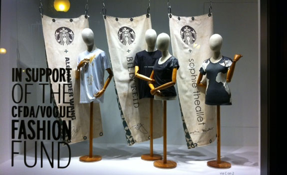

Coffeehouse
Starbucks Digital Network We're bringing the most interesting stuff on the web right to your comfy chair. It's the Starbucks Digital Network in partnership with Yahoo! Wi-Fi Our coffee brings people together ? and our Wi-Fi service helps keep them connected. Learn how to surf while you sip at Starbucks. AT T Wi-Fi (U.S.) Bell Wi-Fi (Canada) Entertainment We love coffee and everything that goes with it. Good books. Great music. And what¡¯s more, we love sharing our favorites with you. Mobile Applications Turns out your phone can help you do all sorts of important things ? like find your favorite beverage or nearest Starbucks. Community Community means we¡¯re better together. In our stores and the world at large. Chat, connect and get involved. Tell us your Starbucks idea Help out a cause at V2V Join us on Facebook Follow us on Twitter Store Design What makes a Starbucks coffeehouse such a vibrant and inviting space? A philosophy of community and environmental responsibility.
Wi-FiAmazing coffees from around the world. Handcrafted beverages to discover and enjoy. We love bringing you these things. |
Store DegineOur pastries and sandwiches are made with high-quality, simple ingredients. So all the goodness you taste is real food, simply delicious. |
CommunityCommunity means we’re better together. In our stores and the world at large. Chat, connect and get involved. |
Real-Time Starbucks Updates in Times Square
Monday, October 10, 2011
Posted by Brad N. - Global Digital Marketing product manager
Times Square has been long deserving of a Starbucks that blends in with the bright lights, non-stop activity and unique buzz of the neighborhood. We¡¯re really excited to announce that last month we opened a new store at the corner of 47th and Broadway. It is designed to look and feel like one of the nearby Broadway Theaters.
Try a Breakfast Sandwich for only $2
Monday, October 03, 2011
Posted by Erin V. - marketing project manager

Design has always inspired us, ever since we first opened our doors in Pike Place Market 40 years ago. Since then, our coffee and our culture have progressed with the times, and our evolved Siren has made its way into neighborhoods all across the world ? making its most recent design debut this year.
As a frequent collaborator with the design and artist community, we are proud to team up with and contribute to the CFDA/VOGUE FASHION FUND (CVFF), an esteemed organization that gives annual grants that provide resources to support and encourage the goals of emerging American fashion designers. Alongside the CVFF, we were thrilled to invite the past three winners, Alexander Wang (2008), Sophie Theallet (2009) and Billy Reid (2010) to create signature, limited-edition designer T-shirts inspired by Starbucks and their personal experience with our brand and our coffee over the years.